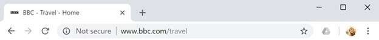
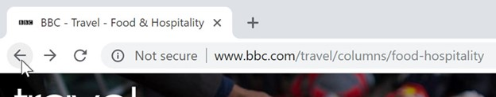
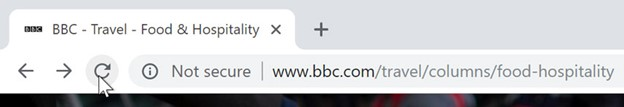
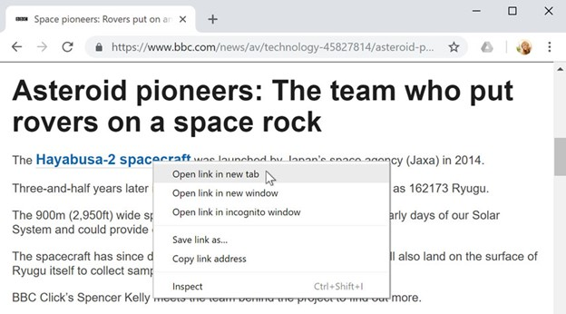
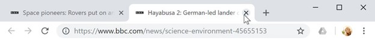
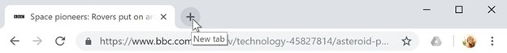
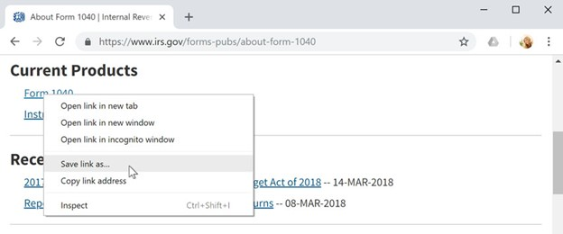
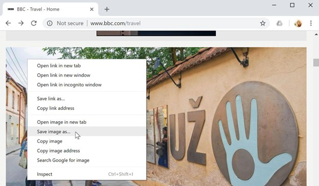

How to browse the internet for a beginner
A web browser is a type of software that allows you to find and view websites on the Internet. There are many different web browsers, but some of the most common ones include Google Chrome, Internet Explorer, Safari, Microsoft Edge, and Mozilla Firefox.
URLs and the address bar

Each website has a unique address, called a URL (short for Uniform Resource Locator). It's like a street address that tells your browser where to go on the Internet. When you type a URL into the browser's address bar and press Enter on your keyboard, the browser will load the page associated with that URL.
In the example below, we've typed www.bbc.com/travel into the address bar.
Links
Whenever you see a word or phrase on a website that's blue or underlined in blue, it's probably a hyperlink, or link for short. Links are used to navigate the Web. When you click a link, it will usually take you to a different webpage. You may also notice that your cursor changes into a hand icon whenever you hover over a link.
Navigation buttons
The Back and Forward buttons allow you to move through websites you've recently viewed. You can also click and hold either button to see your recent history.


The Refresh button will reload the current page. If a website stops working, try using the Refresh button.
Tabbed browsing
Many browsers allow you to open links in a new tab. You can open as many links as you want, and they'll stay in the same browser window instead of cluttering your screen with multiple windows.
To open a link in a new tab, right-click the link and select Open link in new tab (the exact wording may vary from browser to browser).


To close a tab, click the X.

To create a new blank tab, click the button to the right of any open tabs.
Downloading files
Links don't always go to another website. In some cases, they point to a file that can be downloaded, or saved, to your computer.
If you click a link to a file, it may download automatically, but sometimes it just opens within your browser instead of downloading. To prevent it from opening in the browser, you can right-click the link and select Save link as (different browsers may use slightly different wording, like Save target as).

Saving images

Sometimes you may want to save an image from a website to your computer. To do this, right-click the image and select Save image as (or Save picture as).